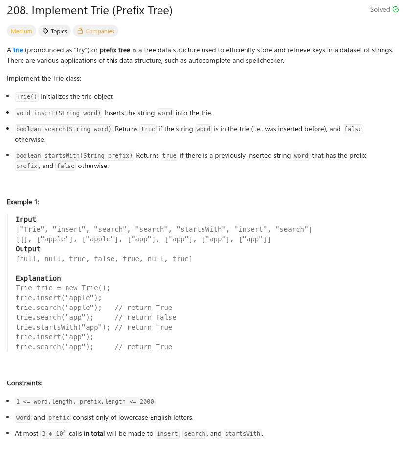
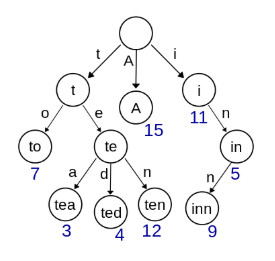

參考資訊：
https://www.cnblogs.com/grandyang/p/4491665.html
題目：


#define MAX_BUF 26
typedef struct _Trie {
bool is_word;
struct _Trie *child[MAX_BUF];
} Trie;
Trie* trieCreate()
{
Trie *r = malloc(sizeof(Trie));
memset(r, 0, sizeof(Trie));
return r;
}
void trieInsert(Trie *obj, char *word)
{
int cc = 0;
int len = strlen(word);
Trie *p = obj;
for (cc = 0; cc < len; cc++) {
char ch = word[cc] - 'a';
if (p->child[ch] == NULL) {
p->child[ch] = malloc(sizeof(Trie));
memset(p->child[ch], 0, sizeof(Trie));
}
p = p->child[ch];
}
p->is_word = true;
}
bool trieSearch(Trie *obj, char *word)
{
int cc = 0;
int len = strlen(word);
Trie *p = obj;
for (cc = 0; cc < len; cc++) {
char ch = word[cc] - 'a';
if (p->child[ch] == NULL) {
return false;
}
p = p->child[ch];
}
return p->is_word;
}
bool trieStartsWith(Trie *obj, char *prefix)
{
int cc = 0;
int len = strlen(prefix);
Trie *p = obj;
for (cc = 0; cc < len; cc++) {
char ch = prefix[cc] - 'a';
if (p->child[ch] == NULL) {
return false;
}
p = p->child[ch];
}
return true;
}
void trieFree(Trie *obj)
{
int cc = 0;
Trie *p = obj;
for (cc = 0; cc < MAX_BUF; cc++) {
if (p->child[cc]) {
trieFree(p->child[cc]);
p->child[cc] = NULL;
}
}
free(obj);
}
/**
* Your Trie struct will be instantiated and called as such:
* Trie* obj = trieCreate();
* trieInsert(obj, word);
* bool param_2 = trieSearch(obj, word);
* bool param_3 = trieStartsWith(obj, prefix);
* trieFree(obj);
*/